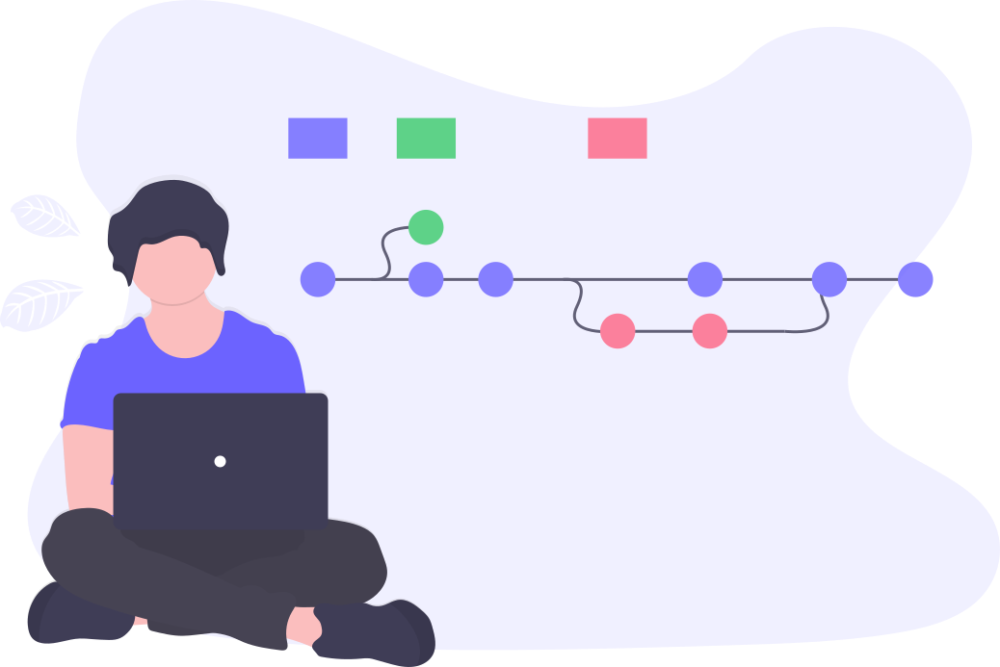
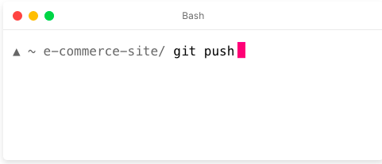
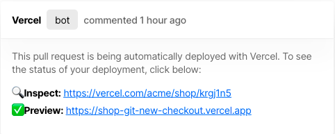
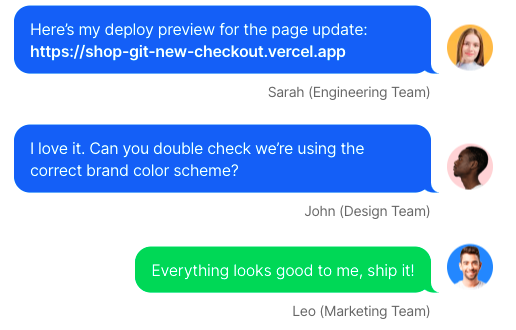

Vercel combines the best developer experience with an obsessive focus on end-user performance. Our platform enables frontend teams to do their best work.
explore the vercel way
1 DevelopDevelopers love Next.js, the open source React framework Vercel built together with Google and Facebook. Next.js powers the biggest websites like Airbnb and Twilio, for use cases in e-commerce, travel, news, and marketing.
Vercel is the best place to deploy any frontend app. Start by deploying with zero configuration to our global edge network. Scale dynamically to millions of pages without breaking a sweat.

Reliable live-editing experience for your UI components.
Connect your pages to any data source, headless CMS, or API and make it work in everyone’s dev environment.
From caching to Serverless Functions, all our cloud primitives work perfectly on localhost.
Works With 30+ Jamstack Frameworks
2 PreviewFrontend development is not meant to be a solo activity. The Vercel platform makes it a collaborative experience with deploy previews for every code change, by seamlessly integrating with GitHub, GitLab, and Bitbucket.

Import your repo with one click, then push. Our built-in CI/CD system triggers for every code change.

Every Git branch and PR receives a live, production-like URL that everyone on your team can visit.

Avoid surprises by iterating with your entire team. Test from the perspective of your users, on every platform.
And Finally
3 ShipDevelopers love Next.js, the open source React framework Vercel built together with Google and Facebook. Next.js powers the biggest websites like Airbnb and Twilio, for use cases in e-commerce, travel, news, and marketing.
Vercel is the best place to deploy any frontend app. Start by deploying with zero configuration to our global edge network. Scale dynamically to millions of pages without breaking a sweat.
TRUSTED BY THE BEST FRONTEND TEAMS